Teach the Alien
You are a machine learning model. Nobody will tell you the rule. All you get is a set of examples with labels, and from these you must work out how to tell a Glorp from anything else.
Training
Study the twelve labelled examples with your group. Agree on one rule that tells you whether a creature is a Glorp. Write it down before you scroll further.
These are Glorps
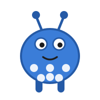
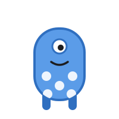
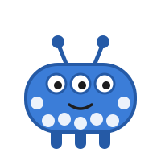
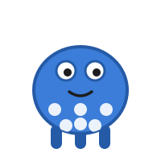
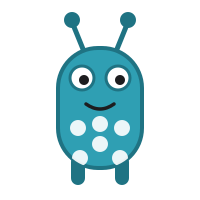
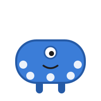
These are NOT Glorps
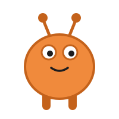
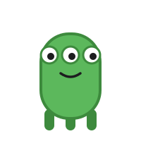
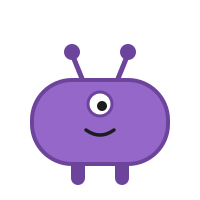
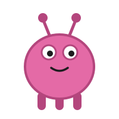
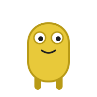
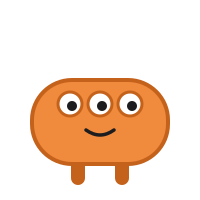
Testing
Here are six creatures the model has never seen. Use your rule to decide each one. There is no "not sure" button, because a classifier trained on two labels has to pick one of them. Notice how that feels.
When the facilitator opens Slido: put your rule into the word cloud in one word, then vote on creatures C and D.
The reveal
Wait for the facilitator, who will give you the word that unlocks the answers.
The real rule
A Glorp is any creature with spots. Colour, shape, number of eyes, antennae and legs have nothing to do with it.
The trouble is that every Glorp in the training set also happened to be blue, and none of the other creatures were. Colour was a perfect predictor in the training data, and it is much easier to see than spots. Many groups learn "blue means Glorp", which works on every training example and fails on creatures C and D.
What just happened, in machine learning terms
- Training data
- The twelve examples you studied.
- Labels
- "Glorp" and "not a Glorp". Someone had to decide these, and the model trusts them completely.
- Features
- The things you could look at: colour, spots, shape, eyes, antennae, legs.
- Prediction
- Your answer for each test creature.
- Shortcut learning
- Picking up a feature that happens to go with the label in the training data (blue) instead of the one that really matters (spots).
- Out of distribution
- Creature E has stripes, which never appeared in training. The model still has to answer, and it will often answer confidently.
This happens with real systems
In a well-known 2016 study, researchers trained an image classifier to tell huskies from wolves using photos in which the wolves mostly stood in snow. The model learned to detect snow. Medical models have done the same: chest X-ray classifiers picked up which hospital an image came from, and skin cancer classifiers reacted to rulers and pen marks that doctors had added to photos of suspicious moles.
Now think about a system trained mostly on one group of pupils, one accent or one kind of school. What will it have learned that has nothing to do with the task?
Talk about it
- What would you need to add to the training set so that colour stops being a useful shortcut?
- Creature F has only two small spots. Should it count? Who decides, and what happens to the model if the people labelling disagree?
- Where might a shortcut like this show up in something your pupils use?